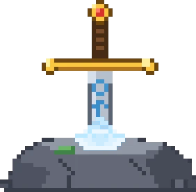

Follow the chapters in order: each act forges the strength the next one demands.

First steel, first scars - the world tests you.
7 bosses charted.
Open the chapter IIThe wilds sharpen their teeth. So should you.
23 bosses charted.
Open the chapter IIIWhat sleeps below does not sleep forever.
10 bosses charted.
Open the chapter IVWings blot the sun. Dragons remember.
4 bosses charted.
Open the chapter VOceans, voids and things without names.
3 bosses charted.
Open the chapter VIThe old titans stir in their chains.
7 bosses charted.
Open the chapter VIIThe end of the thread. The heart of the saga.
12 bosses charted.
Open the chapter